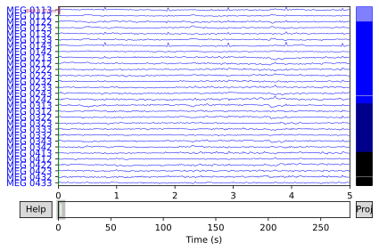

import mne
import osLoading MEG data with the MNE python package
fastai
Loading MEG data with the MNE python package
I am interested in sleep data analysis, where one core informational source is neurophysiological data and in particular EEG data coming from polysomnigraphy.
MNE is a Python package designed particularly for this purpose. Below I outline how to install the package and how to load data with it.
Install
Installation is relatively simple
pip install mne
We can also test the status of the package with the info method.
mne.sys_info()Platform: Linux-5.4.0-48-generic-x86_64-with-glibc2.10
Python: 3.8.5 (default, Sep 4 2020, 07:30:14) [GCC 7.3.0]
Executable: /home/andras/anaconda3/envs/sleep_data/bin/python
CPU: x86_64: 8 cores
Memory: Unavailable (requires "psutil" package)
mne: 0.21.0
numpy: 1.19.2 {blas=openblas, lapack=openblas}
scipy: 1.5.2
matplotlib: 3.3.1 {backend=module://ipykernel.pylab.backend_inline}
sklearn: Not found
numba: Not found
nibabel: Not found
cupy: Not found
pandas: 1.1.3
dipy: Not found
mayavi: Not found
pyvista: Not found
vtk: Not foundData Load
We can set the path to where we download the dataset.
mne.set_config('MNE_DATA', '~/MNE_DATA')Here we use the sample dataset which has its own module.
First we generate the path where we will download the sample dataset.
sample_data_folder = mne.datasets.sample.data_path()
sample_data_folderArchive exists (MNE-sample-data-processed.tar.gz), checking hash 12b75d1cb7df9dfb4ad73ed82f61094f.
Decompressing the archive: /home/andras/mne_data/MNE-sample-data-processed.tar.gz
(please be patient, this can take some time)
Successfully extracted to: ['/home/andras/mne_data/MNE-sample-data']'/home/andras/mne_data/MNE-sample-data'We specify the specific dataset we want to use.
sample_data_raw_file = os.path.join(sample_data_folder, 'MEG', 'sample','sample_audvis_filt-0-40_raw.fif')
sample_data_raw_file'/home/andras/mne_data/MNE-sample-data/MEG/sample/sample_audvis_filt-0-40_raw.fif'Then, we download and open the data (here I have it already)
raw = mne.io.read_raw_fif(sample_data_raw_file)Opening raw data file /home/andras/mne_data/MNE-sample-data/MEG/sample/sample_audvis_filt-0-40_raw.fif...
Read a total of 4 projection items:
PCA-v1 (1 x 102) idle
PCA-v2 (1 x 102) idle
PCA-v3 (1 x 102) idle
Average EEG reference (1 x 60) idle
Range : 6450 ... 48149 = 42.956 ... 320.665 secs
Ready.Data overview
Basic information
print(raw)<Raw | sample_audvis_filt-0-40_raw.fif, 376 x 41700 (277.7 s), ~3.6 MB, data not loaded>print(raw.info)<Info | 15 non-empty values
bads: 2 items (MEG 2443, EEG 053)
ch_names: MEG 0113, MEG 0112, MEG 0111, MEG 0122, MEG 0123, MEG 0121, MEG ...
chs: 204 GRAD, 102 MAG, 9 STIM, 60 EEG, 1 EOG
custom_ref_applied: False
dev_head_t: MEG device -> head transform
dig: 146 items (3 Cardinal, 4 HPI, 61 EEG, 78 Extra)
file_id: 4 items (dict)
highpass: 0.1 Hz
hpi_meas: 1 item (list)
hpi_results: 1 item (list)
lowpass: 40.0 Hz
meas_date: 2002-12-03 19:01:10 UTC
meas_id: 4 items (dict)
nchan: 376
projs: PCA-v1: off, PCA-v2: off, PCA-v3: off, Average EEG reference: off
sfreq: 150.2 Hz
>And finally plotting the data
raw.plot_psd(fmax=50)
raw.plot(duration=5, n_channels=30)Effective window size : 13.639 (s)
Effective window size : 13.639 (s)
Effective window size : 13.639 (s)
